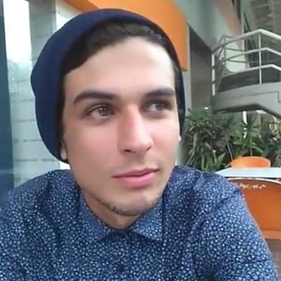

Acerca de mi
Nací en el Estado Zulia pero me mude al Estado Vargas a la edad de 3 años, vivo aqui desde entonces. Estudio Ingeniería de Sistemas por mi tío, quien trabaja en el departamento de sistemas del Seguro Mercantil desde que tengo memoria, alguna vez trabaje de asistente en el departamento de contabilidad de Kraft Foods C. A., trabajo al cual renuncie para iniciar carrera en la universidad.